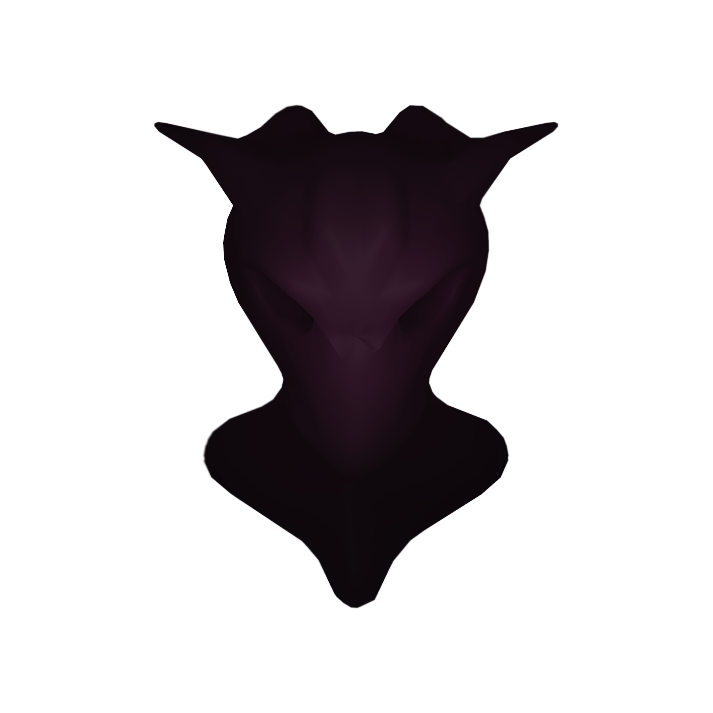

Dim Rave
DJ y productor oriundo de Resistencia, Chaco, Luis Perren, más conocido en la escena musical como Dim Rave, se distingue por su versatilidad en la mezcla de géneros. Con tres facetas únicas: Su faceta groovera Con sus sets de Deep house, Tech House y Minimal Deep Tech, haciendo que todos se pongan bailar, creando un ambiente lleno de energía y ritmo. Su faceta oscura Llevándote a un viaje sonoro hipnótico con su Minimal, Driving e Hypnotic Techno, revelando el lado más introspectivo y atmosférico de su música. Su faceta mas pesada dando unos duros golpes con su hard groove, Schranz e Industrial Hardcore bajo el seudonimo de ¨Empty Gaze¨.
Redes Sociales